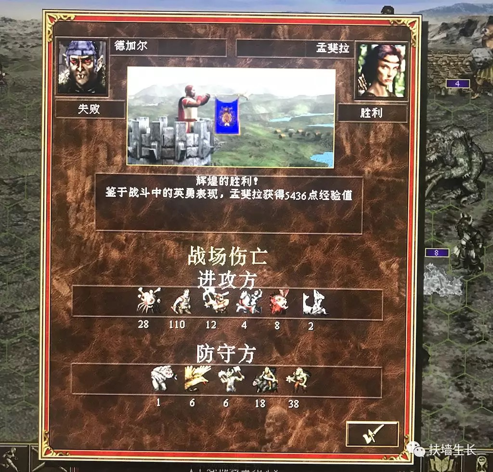
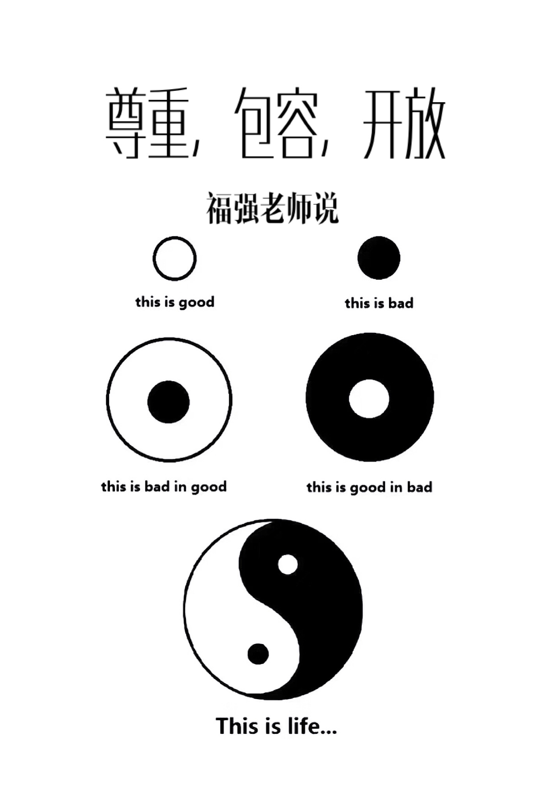

Everyone needs a fallback
王福强 著
2018-06-28今天我老婆被人怼了，电话里找我撒气， 她想做一个事情，她的合作伙伴不让她做， 她就很生气…
电话过程中，听说我要找人清洗空调，就对我各种大呼小叫，“不能洗，一屋子清洁剂味道…”， 到最后我只是听她一个人在哪里吼，我也不理她，她就更加气愤地挂断了电话…
其实，我老婆也好，她的那个合作伙伴也罢，都没有意识到一个问题，就是你提出了异议，但没有给出解决方案。
政府推行一个禁令，有些时候因为有强权背书，所以， 很多人往往只能忍气吞声，少数人则会寻找漏洞，私底下依然做他们要做的事情。 很大一部分原因就是， 你推行一个禁令， 但没有给人一条退路或者说安置手段，到最后往往就是阴奉阳违， 效果不佳。
在公司里你要推行一个什么项目或者产品，更要考虑fallback的问题， 如果你要推行的东西侵占了别人的“地盘”或者“政绩利益”，你就得首先解决这个核心矛盾，之后才能取得推行的进展。 要么把对方拉到新的plan中来，要么做好服务，帮对方把没有时间做或者没有KPI激励的东西做掉，否则，单纯强调自己的远大蓝图是没有什么卵用的，“那是你的事情，管我个鸟事”？
劝退员工更要给对方留一条后路，来日大家好相见嘛， 你可以提前一个月跟对方谈，给他/她时间去找下一份工作， 或者帮忙推荐去哪里（尤其是对于那种不是能力问题，但跟公司文化环境或者主管不和的员工）， 你不能直接颐指气使的就说我要开除你，即刻走人，那样往往就把事情弄僵了， 员工直接就跟贵公司搞劳动仲裁了，毕竟兔子急了还咬人呢？ 一个懂得拿捏的HR在这里很重要！
古代打围城战的时候，往往要留一个门给对方， 而不是所有门都堵住，团团围死， 其目的就在于，要给对方留条退路， 这样，对方一旦意识到有退路，就会在信念上有动摇，一有机会就可能选择退却，你的围城战打的也不用那么辛苦和惨烈。 如果不留后路，那么，对方一定是决一死战，到最后往往就是两败俱伤， 为啥是“十则围之,五则攻之,倍则分之”， 因为围城和攻城是最不划算的， 守城守得好，可能以一当十，以逸待劳，所以， 留条后路， 对围城一方是最佳策略。

所以， 给别人一个fallback， 也是给自己一个交代， 单纯只是强调一方利益是达不成 更大的共识 的。
